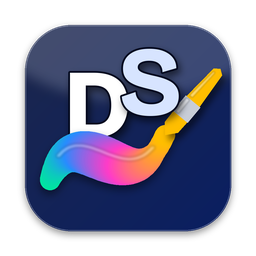

12 Gauge Design Studio
Privacy Policy
Effective November 21, 2026. Last updated November 21, 2026.
12 Gauge Design Studio is a Mac app by Rocky Shaw for making event posters, match cards, social posts, thumbnails, and print pieces. It is built to keep your work on your Mac.
What Design Studio does not do
- Design Studio has no accounts and no sign in.
- Design Studio does not run its own servers. We do not receive, sell, or share your data.
- Design Studio does not collect personal information.
- Design Studio has no ads, no analytics, and no tracking.
What stays on your Mac
- Your designs. Each design is saved as a .12gdesign file wherever you choose to save it. Design Studio does not upload your designs.
- Exports. Images and PDFs you export are saved where you choose. Design Studio does not upload them.
- Your brand kit, templates, and app settings, such as the appearance you pick, are stored on your Mac.
- If the app quits unexpectedly, an autosave copy of your open work is kept on your Mac so it can be restored the next time you open the app.
- Any API keys you enter in Settings are stored in the Keychain on your Mac. They are not written into your designs.
- Photos and files you add are copied into the design file on your Mac.
When Design Studio connects to the internet
Design Studio only goes online when you use a feature that needs it. In each case the request goes straight from your Mac to that service. Those services can see your Mac's IP address and the request itself, as with any web request, and their own privacy policies apply.
- Unsplash photo search. When you search for photos, the words you type are sent to Unsplash to get results. When you add a photo, it is downloaded from Unsplash, and Unsplash is told the photo was used, as Unsplash requires. See the Unsplash privacy policy.
- Pixabay photo search. If Pixabay search is turned on in your copy of the app, the words you type are sent to Pixabay and chosen images are downloaded from Pixabay. See the Pixabay privacy policy.
- Google Fonts. The first time you use a Google font that is not already on your Mac, the font file is downloaded from Google Fonts. Only the font name is requested. See the Google privacy policy.
- Photo upscaling model. If you choose to use the RealESRGAN upscaler, Design Studio downloads the model file once from Hugging Face and keeps it on your Mac. No photos are sent. Upscaling runs on your Mac. See the Hugging Face privacy policy.
Background removal and other photo tools run on your Mac using Apple's built-in technology. Your photos are not sent anywhere for these tools.
Purchases
If you get Design Studio from the Mac App Store, Apple handles the purchase. Design Studio does not collect your payment information.
Children
Design Studio is not directed to children under 13 and does not knowingly collect information from anyone.
Your choices
You can delete your designs and exports at any time from Finder. Deleting the app and its data removes its settings and saved autosave copies from your Mac.
Changes and contact
If this policy changes, the new version will be posted on this page with a new date. Questions: rockyshawjr@yahoo.com.